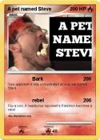

>
>
I-INTRODUCTION
The "A Pet Named Steve" meme originated from a video by popular YouTuber Markiplier, where he played a game called Google Feud. In the video, Markiplier entered a funny answer, "A Pet Named Steve," which amused him greatly. This phrase quickly caught on among Markiplier's fans and the wider gaming community, becoming a recurring joke. People now use the meme to refer to imaginary pets or as a humorous response in various online discussions. The meme's popularity can be attributed to Markiplier's infectious laughter and the fondness his fans have for his comedic moments.
II-"BIRTH ACT"
Name: Apet Steve
Pronouns: bark/meme
Date of Creation: 06/07/2016
Father I: Mark Fishbach Known as: MARKIPLIER
Father II: Sean McLoughlin Known as: JACKSEPTICEYE
Breed: unknown
III-SKILLS:
IV-WHERE IT ALL STARTED:
V-WHY DID I MAKE THIS:
because i didn't want to introduce myself '_'